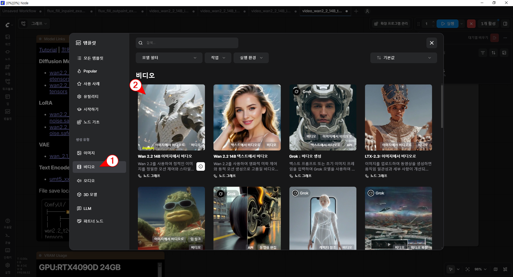
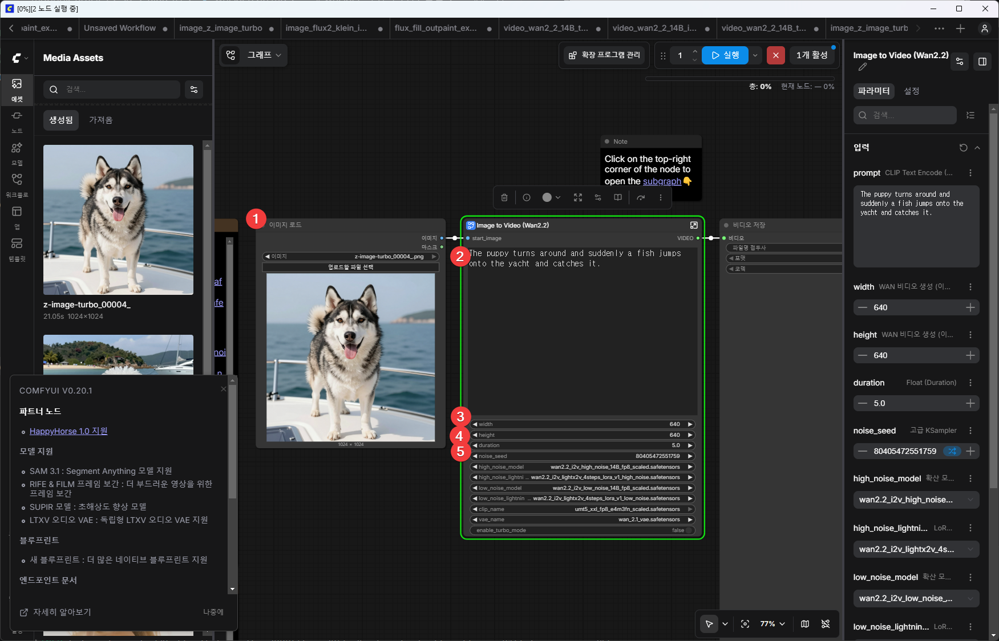
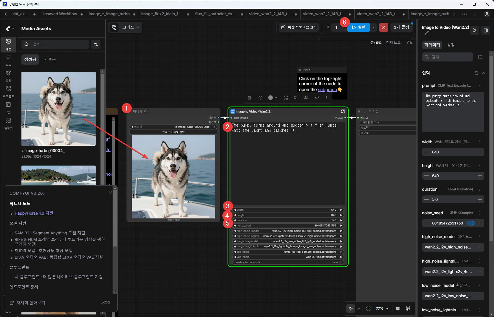

로컬에서 동영상 만들기 - Wan 2.2 Image
Wan 2.2 이미지 to 비디오 워크플로 기본
내 이미지를 기반으로 동영상을 만들어 준다. 예를 들면, 아이 사진으로 하늘을 날아다니는 동영상을 만들 수 있다.

이 워크플로에서는 크게 5가지를 설정해 줘야 한다.

- 이미지: 이 영상에서 사용할 이미지를 설정
- prompt: 영상의 내용. 영어로 적는다.
- width: 너비. 동영상 한 프레임의 폭. 클수록 처리 시간이 오래 걸린다.
- height: 높이. 동영상 한 프레임의 높이. 클수록 처리 시간이 오래 걸린다.
- duration: 길이. 동영상의 재생 시간을 초단위로 설정할 수 있다. 길수록 처리 시간이 오래 걸린다.
워크플로 실행

- 이미지: 애셋에서 끌어다 놓거나 파일 선택 버튼을 눌러 내 컴퓨터의 이미지 파일 하나를 선택한다.
- prompt: 기본값 그대로 둔다.
- width: 기본값 640 그대로 둔다.
- height: 기본값 640 그대로 둔다.
- duration: 5.0초 그대로 둔다.
- 실행 버튼을 누른다.
(한글) 강아지가 뒤돌았는데 갑자기 요트 위로 물고기가 튀어 올라 그 물고기를 잡는다
(영문) The puppy turns around and suddenly a fish jumps onto the yacht and catches it.
실행 결과
재시도
(한글) 강아지가 뒤돌았는데 그 순간 갑자기 요트 위로 작은 물고기가 튀어 올랐고, 강아지가 그 물고기를 쫓아 입으로 문다
(영문) The puppy turned around, and at that moment, a small fish suddenly jumped onto the yacht, and the puppy chased the fish and caught it with its mouth.